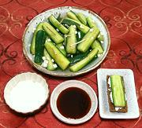

|
Cucumbers, SaltedRussia - Smedomi | ||||
| Makes: Effort: Sched: DoAhead: |
1-1/4 # ** 2 weeks Must |
A very popular zakuski (appetizer) in Russia, served by the piece rather than as a salad. This is an "official" version, definitely "do ahead" - for a quick version see our recipe Cucumbers, Marinated. | |||
|
2-1/4 ------- 10 10 4 2 2 20 ------- 4 1 3 ------- |
# --- cl oz --- c t T --- |
Cucumbers (1) -- Layering Black Currant Leaves (2) Garlic Dill Sprig Bay Leaves Horseradish, fresh Peppercorns -- Marinade Water Wine Vinegar, white Salt -- Dips Honey Sour Cream |
Make - (2 weeks - 22 min work)
|